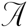
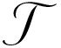

|
"America-Bashing" |
||||
|
The Intellectual Origins Of America-Bashing By Lee Harris
 specter haunts the world, and that specter is America. This is not the America discoverable in the pages of a world atlas, but a mythical America that is the target of the new form of anti-Americanism that Salman Rushdie, writing in the Guardian (February 6, 2002), says “is presently taking the world by storm” and that forms the subject of a Washington Post essay by Martin Kettle significantly entitled “U.S. Bashing: It’s All The Rage In Europe” (January 7, 2002). It is an America that Anatol Lieven assures us, in a recent article in the London Review of Books, is nothing less than “a menace to itself and to mankind” and that Noam Chomsky has repeatedly characterized as the world’s major terrorist state. But above all it is the America that is responsible for the evils of the rest of the world. As Dario Fo, the winner of the 1997 Nobel Prize for literature, put it in a notorious post-September 11 email subsequently quoted in the New York Times (September 22, 2001): “The great speculators [of American capitalism] wallow in an economy that every years kills tens of millions of people with poverty [in the Third World] — so what is 20,000 dead in New York? Regardless of who carried out the massacre [of 9-11], this violence is the legitimate daughter of the culture of violence, hunger and inhumane exploitation.” It is this sort of America that is at the hub of Antonio Negri and Michael Hardt’s revision of Marxism in their intellectually influential book Empire (Harvard University Press, 2000) — a reinterpretation of historical materialism in which the global capitalist system will be overthrown not by those who have helped to create it, namely, the working class, but rather by a polyglot global social force vaguely referred to as “the multitude” — the alleged victims of this system. America-bashing is anti-Americanism at its most radical and totalizing. Its goal is not to advise, but to condemn; not to fix, but to destroy. It repudiates every thought of reform in any normal sense; it sees no difference between American liberals and American conservatives; it views every American action, both present and past, as an act of deliberate oppression and systemic exploitation. It is not that America went wrong here or there; it is that it is wrong root and branch. The conviction at the heart of those who engage in it is really quite simple: that America is an unmitigated evil, an irredeemable enormity. This is the specter that is haunting the world today. Indeed, one may even go so far as to argue that this America is the fundamental organizing principle of the left as it exists today: To be against America is to be on the right side of history; to be for it is to be on the wrong side. But let’s pause to ask a question whose answer the America-bashers appear to assume they know: What is the right side of history at this point in history? The concept of a right side of history is derived from Marxism, and it is founded on the belief that there is a forward advance toward a socialist future that can be resisted, but not ultimately defeated. But does anyone believe this anymore? Does anyone take seriously the claim that the present state of affairs will be set aside and a wholly new order of things implemented in its place, and that such a transformation of the world will happen as a matter of course? And, finally, if in fact there are those who believe such a thing, what is the status of this belief? Is it a realistic assessment of the objective conditions of the present world order, or is it merely wishful thinking? Marx’s political realism he importance of these questions should be obvious to anyone familiar with the thought of Marx. Marx’s uniqueness as a thinker of the left is his absolute commitment to the principles of political realism. This is the view that any political energy that is put into what is clearly a hopeless cause is a waste. Utopianism is not only impractical; it is an obstacle to obtaining socialism’s true objective, since it diverts badly needed resources away from the pursuit of viable goals, wasting them instead on the pursuit of political fantasies. The concept of fantasy as a political category assumed its central place in Marxist thought in The Communist Manifesto, where Karl Marx and Friedrich Engels used it as the distinguishing mark of their own brand of socialism: It was this that condemned all previous forms of socialism to the realm of vague dreams and good intentions, and which gave Marxism the claim to be a “scientific” form of socialism. Marx’s use of the term “scientific” in this text has often been criticized. But, in his defense, it should be remembered that the German Wissenschaft describes a far wider category than the English “science.” It means what we know as opposed to what we merely opine, or feel, or imagine; the objective as opposed to the subjective; realistic thinking as opposed to impractical daydreaming. And it is in this last sense that Marx and Engels use it: For the opposite of the scientific is none other than the utopian. This is the basis of Marx’s condemnation of all forms of utopian socialism, the essence of which is the enormous gap between the “fantastic pictures of future society” the utopian socialist dreams of achieving, on one hand, and any realistic assessment of the objective conditions of the actual social order on the other. This concept of fantasy as “fantastic pictures” inside the head of impractical daydreamers is a classic theme of German Romantic literature and is perhaps most closely identified with the characters of E.T.A. Hoffman’s stories, such as Kapellmeister Kreisler. The fantasist, in this literature, is a character type: He lives in his own dream world and can manage only the most tenuous relationship to the real world around him. But, unlike the character type of the absent-minded professor, the Romantic fantasist is not content to putter around in his own world. Instead, he is forever insisting that his world is the real one, and in the process of doing this, he reduces the real world around him, and the people in it, to an elaborate stage setting for the enactment of his own private fantasies. Marx and Engels’s wholesale condemnation of all previous socialism as utopian fantasy is the fundamental innovation of their own work. It is the basis of their claim to be taken seriously, not merely by Hoffmanesque daydreamers, but by men of practical judgment and shrewd common sense. To fail to make this distinction, or to fail to stay on the right side of this distinction once it has been made, is to cease to be a Marxist and to fall back into mere Träumerei. This demarcation line arose because Marx believed that he had grasped something that no previous utopian socialist had even suspected. He believed that he had shown that socialism was inevitable and that it would come about through certain ironclad laws of history — laws that Marx believed were revealed through the study of the very nature of capitalism. Socialism, in short, would not come about because a handful of daydreamers had wished for it, or because pious moralists had urged it, but because the unavoidable breakdown of the capitalist system would force the turn to socialism upon those societies that, prior to this breakdown, had been organized along capitalist lines. Schematically the scenario went something like this: • The capitalists would begin to suffer from a falling rate of profit. • The workers would therefore be “immiserized”; they would become poorer as the capitalists struggled to keep their own heads above water. • The poverty of the workers would drive them to overthrow the capitalist system — their poverty, not their ideals. What is interesting here is that, once you accept the initial premise about the falling rate of profit, the rest does indeed follow realistically. Now, this does not mean that it follows necessarily or according to an ironclad scientific law; but it certainly conveys what any reasonable person would take as the most probable outcome of a hypothetical failure of capitalism. For Marx it is absolutely essential that revolutionary activities be justifiable on realistic premises. If they cannot be, then they are actions that cannot possibly have a real political objective — and therefore, their only value can be the private emotional or spiritual satisfaction of the people carrying out this pseudo-political action. So in order for revolutionary activity to have a chance of succeeding, there is an unavoidable precondition: The workers must have become much poorer over time. Furthermore, there had to be not merely an increase of poverty, but a conviction on the part of the workers that their material circumstances would only get worse, and not better — and this would require genuine misery. This is the immiserization thesis of Marx. And it is central to revolutionary Marxism, since if capitalism produces no widespread misery, then it also produces no fatal internal contradiction: If everyone is getting better off through capitalism, who will dream of struggling to overthrow it? Only genuine misery on the part of the workers would be sufficient to overturn the whole apparatus of the capitalist state, simply because, as Marx insisted, the capitalist class could not be realistically expected to relinquish control of the state apparatus and, with it, the monopoly of force. In this, Marx was absolutely correct. No capitalist society has ever willingly liquidated itself, and it is utopian to think that any ever will. Therefore, in order to achieve the goal of socialism, nothing short of a complete revolution would do; and this means, in point of fact, a full-fledged civil war not just within one society, but across the globe. Without this catastrophic upheaval, capitalism would remain completely in control of the social order and all socialist schemes would be reduced to pipe dreams. The immiserization thesis, therefore, is critical to Marx, for without it there would be no objective conditions in response to which workers might be driven to overthrow the capitalist system. If the workers were becoming better off with time, then why jump into an utterly untested and highly speculative economic scheme? Especially when even socialists themselves were bitterly divided over what such a scheme would be like in actual practice. Indeed, Marx never committed himself to offering a single suggestion about how socialism would actually function in the real world. Immiserization goes global y the twentieth century the immiserization thesis was already beginning to look shaky. Empirical evidence, drawn either by impressionistic observation or systematic statistical studies, began to suggest that there was something wrong with the classical version of the thesis, and an attempt was made to save it by redefining immiserization to mean not an absolute increase in misery, but merely a relative one. This gloss allowed a vast increase in empirical plausibility, since it accepted the fact that the workers were indeed getting better off under the capitalist system but went on to argue that they were not getting better off at the same rate as the capitalists. The problem with this revision lay not in its economic premises, but its political ones. Could one realistically believe that workers would overthrow an economic system that was continually improving their own lot, simply because that of the capitalist class was improving at a marginally better rate? Certainly, the workers might envy the capitalists; but such emotions simply could not supply the gigantic impetus required to overthrow a structure as massive as the capitalist system. Before the workers of a capitalist society could unite, they had to feel that they had literally nothing to lose — nothing to lose but their proverbial chains. For if they had homes and cars and boats and rvs to lose as well, then it became quite another matter. In short, the relative immiserization thesis was simply not the stuff that drives people to the barricades. At most it could fuel the gradualist reforms of the evolutionary ideal of socialism — a position identified with Eduard Bernstein. The post-World War II period demolished the last traces of the classical immiserization thesis. Workers in the most advanced capitalist countries were prosperous by any standard imaginable, either absolute or relative; and what is even more important, they felt themselves to be well off, and believed that the future would only make them and their children even better off than they had been in the past. This was a deadly blow to the immiserization thesis and hence to Marxism. For the failure of the immiserization thesis is in fact the failure of classical Marxism. If there is no misery, there is no revolution; and if there is no revolution, there is no socialism. Q.E.D. Socialism goes back once more to being merely a utopian fantasy. Yet those who still claim to derive their heritage from Marx are mostly unwilling to acknowledge that their political aims are merely utopian, not scientific. How is that possible? There might be several reasons advanced for this, but certainly one of them is Paul Baran. A Polish born American economist and a Marxist, Baran is the author of The Political Economy of Growth (Monthly Review Press, 1957). In it, for the first time in Marxist literature, Baran propounded a causal connection between the prosperity of the advanced capitalist countries and the impoverishment of the Third World. It was no longer the case, as it was for Marx, that poverty — as well as idiocy — was the natural condition of man living in an agricultural mode of production. Rather, poverty had been introduced into the Third World by the capitalist system. The colonies no longer served the purpose of consuming overstocked inventories, but were now the positive victims of capitalism. What needs to be stressed here is that, prior to Baran, no Marxist had ever suspected that capitalism was the cause of the poverty of the rest of the world. Not only had Marx and Engels failed to notice this momentous fact, but neither had any of their followers. Yet this omission was certainly not due to Marx’s lack of knowledge about, or interest in, the question of European colonies. In his writing on India, Marx shows himself under no illusions concerning the brutal and mercenary nature of British rule. He is also aware of the “misery and degradation” effected by the impact of British industry’s “devastating effects” on India. Yet all of this is considered by Marx to be a dialectical necessity; that is to say, these effects were the unavoidable precondition of India’s progress and advance — an example of the “creative destruction” that Schumpeter spoke of as the essence of capitalist dynamics. Or, as Marx put it in On Colonialism: “[T]he English bourgeoisie . . . will neither emancipate nor materially mend the social condition of the mass of the [Indian] people . . . but . . . what they will not fail to do is to lay down the material premises for both” the emancipation and the mending of this social condition. The radical nature of Baran’s reformulation of Marxist doctrine is obscured by an understandable tendency to confuse Baran’s theory with Lenin’s earlier theory of imperialism. In fact, the two have nothing in common. Lenin’s theory had evolved in order to explain the continuing survival of capitalism into the early twentieth century, and hence the delay of the coming of socialism. In Lenin’s view, imperialism is not the cause of Third World immiserization, but rather a stopgap means of postponing immiserization in the capitalist countries themselves. It is the capitalist countries’ way of keeping their own work force relatively prosperous — and hence politically placid — by selling surplus goods into captive colonial markets. It is not a way of exploiting, much less impoverishing, these colonies. It was rather a way “to bribe the upper strata of the proletariat, and . . . to . . . strengthen opportunism,” as Lenin put it in Imperialism: The Highest Stage of Capitalism (International Publishers, 1933). This gives us the proper perspective from which to judge the revolutionary quality of Baran’s reformulation. For, in essence, what Baran has done is to globalize the traditional doctrine of immiserization so that, instead of applying to the workers of the advanced capitalist countries, it now came to apply to the entire population of those countries that have not achieved advanced capitalism: It was the rest of the world that was being impoverished by capitalism, not the workers of the advanced countries. Baran’s global immiserization thesis, after its initial launch, was taken up by other Marxists, but it was nowhere given a more elaborate intellectual foundation than in Immanuel Wallerstein’s monumental study The Modern World-System (Academic Press, 1974), which was essentially a fleshing out in greater historical and statistical detail of Baran’s thesis. Hence, for the sake of convenience, I will call the global immiserization thesis the Baran-Wallerstein revision. America as “root cause” hat i now would like to consider is not the thesis itself, but the role that this thesis played in bolstering and revitalizing late twentieth-century Marxism. For it is here that we find the intellectual origins of the international phenomenon of America-bashing. If there is any element of genuine seriousness in this movement — if, indeed, it aspires to be an objective and realistic assessment of the relationship of America to the rest of the world — then that element of seriousness is to be found in the global immiserization thesis: America has gotten rich by making other countries poor. Furthermore, this is no less true of those who, like Chomsky, have focused on what is seen as American military aggression against the rest of the world, for this aggression is understood as having its “root cause” in America’s systematic exploitation of the remainder of the human race. If American exploitation did not create misery, it would not need to use military force. It is the global immiserization thesis that makes the use of force an indispensable tool of American foreign policy and that is responsible, according to this view, for turning America into a terrorist state. This explains the absolute centrality of the global immiserization thesis in the creation of the specter of America now haunting so much of our world. The Baran-Wallerstein revision of the classical immiserization thesis into its global context was far better adapted to fix what was wrong in Marxist theory than the revisionist notion of relative immiserization discussed above. For, as we have seen, what was needed was real misery, and not merely comparative misery, since without such misery there would be no breakdown of capitalism: no civil war, no revolution, no socialism. And who can doubt that great real misery exists in the Third World? In addition to providing a new and previously untapped source of misery, the Baran-Wallerstein revision provided several other benefits. For example, there was no longer any difficulty in accepting the astonishingly high level of prosperity achieved by the work force of the advanced capitalist countries — indeed, it was now even possible to arraign the workers of these countries alongside of the capitalists for whom they labored — or, rather, more precisely, with whom they collaborated in order to exploit both the material resources and the cheap labor of the Third World. In the new configuration, both the workers and the capitalists of the advanced countries became the oppressor class, while it was the general population of the less advanced countries that became the oppressed — including, curiously enough, even the rulers of these countries, who often, to the untutored eye, seemed remarkably like oppressors themselves. With this demystification of the capitalist working class came an end to even a feigned enthusiasm among Marxists for solidarity with the hopelessly middle-class aspirations of the American blue-collar work force. The Baran-Wallerstein revision offered an exotic new object of sympathy — namely, the comfortably distant and abstract Third World victims of the capitalist world system. Perhaps most important, the Baran-Wallerstein revision also neatly solved the most pressing dilemma that worker prosperity in advanced capitalist countries bequeathed to classical Marxism: the absolute lack of revolutionary spirit among these workers — the very workers, it must be remembered, who were originally cast in the critical role of world revolutionaries. In the new theoretical configuration, this problem no longer mattered simply because the workers of the capitalist countries no longer mattered. Hence the appeal of the global immiserization thesis: The Baran-Wallerstein revision neatly obviates all the most outstanding objections to the classical Marxist theory. This leaves two questions unanswered: Is it true? And even if it is true, does it save Marxism? Whether the immiserization thesis is true or not is simply too complex a topic to deal with here. Indeed, for the sake of the present argument, I am willing to assume that it is absolutely true — truer than anything has ever been true before. For what I want to concentrate on is the question of whether the Baran-Wallerstein revision is consistent with Marxism’s claim to represent a realistic political agenda as opposed to a mere utopian fantasy. And the short answer is that, no matter how true the global immiserization thesis might be, it does not save the Baran-Wallerstein revision of Marxism from being condemned as utopian fantasy — and condemned not by my standards or yours, but by those of Marx and Engels. This is because the original immiserization thesis was set within the context of a class war within a society — an actual civil war between different classes of one and the same society, and not between different nations on different continents. This makes an enormous difference, for it is not at all unreasonable to think that a revolutionary movement could succeed, by means of a violent and bloody civil war, in gaining the monopoly of force within a capitalist society, and thus be able to dictate terms to the routed capitalists, if any survived. But this is an utterly different scenario from one in which the most advanced capitalist societies have a monopoly of force — and brutally effective force — at their disposal. For in this case it is absurd to think that the exploited Third World countries could possibly be able to alter the world order by even a hair, provided the advanced capitalist societies were intent on not being altered. What could they do to us? 9-11 calling he answer to this question, according to many of those who accept the global immiserization thesis, came on 9-11. Noam Chomsky, perhaps America’s most celebrated proponent of the Baran-Wallerstein thesis, expressed this idea in the immediate aftermath. Here, for the first time, the world had witnessed the oppressed finally striking a blow against the oppressor — a politically immature blow, perhaps, comparable to the taking of the Bastille by the Parisian mob in its furious disregard of all laws of humanity, but still an act equally world-historical in its significance: the dawn of a new revolutionary era. This judgment can make sense only in the context of the Baran-Wallerstein thesis. For if 9-11 was in fact a realistic blow against the advanced capitalist countries — or even just the most advanced — then here was an escape from the utopian deadlock of the global immiserization thesis. Here was a way that the overthrow of world capitalism could be made a viable historical outcome once again, and not merely the fantastic delusions of a sect. This explains the otherwise baffling valorization of 9-11 on the part of the left — by which I mean the enormous world-historical significance that they have been prepared to attribute to al Qaeda’s act of terror. But was 9-11 truly world-historical in the precise sense required to sustain the Baran-Wallerstein revision? For 9-11 to be world-historical in this sense, it would have to contain within it the seeds of a gigantic shift in the order of things: something on the scale of the decline and collapse of capitalist America and with it the final realization of the socialist realm. But this investment of world-historical significance to 9-11 is simply wishful thinking on the part of the left. It is an effort to transform the demented acts of a group of fantasists into the vanguard of the world revolution. Because if there is to be a world revolution at all there has to be a vanguard of that revolution, an agent whose actions are such as to represent a threat to the capacity of the capitalist system simply to survive. This means that it is not enough to injure it; it is not enough to wound or madden it; it is not enough to rouse it to rage — the agent must kill it, too. He must be capable of overthrowing the hegemonic power at the center of the capitalist world system. But this is absolutely implausible. Any realistic assessment of any possible scenario will inevitably conclude that nothing that al Qaeda can do can cause the collapse of America and the capitalist system. The worse eventuality in the long run would be that America would be forced to break its hallowed ideal of universal tolerance, in order to make an exception of those who fit the racial profiling of an al Qaeda terrorist. It is ridiculous to think that if al Qaeda continued to attack us such measures would not be taken. They would be forced upon the government by the people (and anyone who thinks that the supposed cultural hegemony of the left might stop this populist fury is deluded). In other words, the only effect on America of a continuation of September 11-style attacks would be an increasingly repressive state apparatus domestically and a populist home front demand for increasingly severe retaliation against those nations supporting or hiding terrorists. But neither one of these reactions would seriously undermine the strength of the United States — indeed, it is quite evident that further attacks would continue to unite the overwhelming majority of the American population, creating an irresistible “general will” to eradicate terrorism by any means necessary, including the most brutal and ruthless. But this condition, let us recall, is precisely the opposite of the objective political conditions that, according to Marx, must be present in order for capitalism to be overthrown. For classical Marxism demands, quite realistically, a state that is literally being torn apart by internal dissension. Revolution, in short, requires a full-fledged civil war within the capitalist social order itself, since nothing short of this can possibly achieve the goal that the revolution is seeking. Hence, 9-11-style attacks that serve only to strengthen the already considerable solidarity between classes in the United States are, from the perspective of classical Marxism, fatally flawed. For such attacks not only fail to further any revolutionary aims; they actually make the revolution less probable. A society of 300 million individuals whose bumper stickers say “United We Stand” is not a breeding ground for revolutionary activity. Nor is it a society that can be easily intimidated into mending its ways, even if we make the assumption that its ways need mending. But if the result of 9-11 was to strengthen the political unity of the United States, then 9-11 was definitely not world-historical. The unspeakable human horror of 9-11 should not blind us to the ghastly triviality of the motive and the inevitable nullity of the aftermath. The temptation of fantasy ideology he baran-wallerstein revision of Marxism does provide a new global reformulation of the immiserization thesis. But the locus of this misery, the Third World, does not and cannot provide an adequate objective foundation for a revolutionary struggle against the capitalist system. Rather, this foundation can be provided only by a majority of the workers in the advanced capitalist countries themselves; but, as we have seen, the effect of 9-11 on the working class of the United States was not one conducive to the overthrow and demise of capitalism. On the contrary, nowhere was the desire to retaliate against the terrorists more powerfully visceral than among the working class of the United States. The overwhelming majority of its members instantly responded with collective and spontaneous expression of solidarity with other Americans and expressions of outrage against those who had planned and carried out the attack, as well as those who attempted to palliate it. For those who are persuaded by the Baran-Wallerstein thesis, 9-11 represents a classic temptation. It is the temptation that every fantasy ideology offers to those who become caught up in it — the temptation to replace serious thought and analysis, fidelity to the facts and scrupulous objectivity, with the worst kind of wishful thinking. The attempt to cast 9-11 as a second taking of the Bastille simply overlooks what is most critical about both of these events, namely, that the Bastille was a symbol of oppression to the masses of French men and women who first overthrew it and then tore it down, brick by brick. And while it is true that the Bastille had become the stuff of fantasy, thanks to the pre-1789 “horrors of the Bastille” literature, it was still a fantasy that worked potently on the minds of the Parisian mob and hence provided the objective political conditions necessary to undermine the Bourbon state. But the fantasy embodied in 9-11, far from weakening the American political order, strengthened it immeasurably, while the only mobs that were motivated by the enactment of this fantasy were those inhabiting the Arab streets — a population pathetically unable to control even the most elementary aspects of its own political destiny, and hence scarcely the material out of which a realistically minded revolutionary could hope to fashion an instrument of world-historical transformation. These people are badly miscast in the role of the vanguard of the world revolution. And what can we say about those in the West, allegedly acting within the tradition of Marxist thought, who encourage such spectacularly utopian flights of fantasy? The Baran-Wallerstein thesis cannot save Marxism; and, in fact, it is a betrayal of what is genuinely valid in Marx — namely, the insistence that any realistic hope of a world-historical transformation from one stage of social organization to a more humane one can come only if men and women do not yield to the temptation of fantasy ideology, even — and, indeed, especially — when it is a fantasy ideology dressed up to look like Marxism. Instead, the Baran-Wallerstein thesis has sadly come to provide merely a theoretical justification for the most irrational and infantile forms of America-bashing. There is nothing Marxist about this. On the contrary, according to Marx, it was the duty of the non-utopian socialist, prior to the advent of genuine socialism, to support whatever state happened to represent the most fully developed and consistently carried out form of capitalism; and, indeed, it was his duty to defend it against the irrational onslaughts of those reactionary and backward forces that tried to thwart its development. In fact, this was a duty that Marx took upon himself, and nowhere more clearly than in his defense of the United States against the Confederacy in the Civil War. Only in this case he was defending capitalism against a fantasy ideology that, unlike that of radical Islam, wished to roll back the clock a mere handful of centuries, not several millennia. Those who, speaking in Marx’s name, try to defend the fantasy ideology embodied in 9-11 are betraying everything that Marx represented. They are replacing his hard-nosed insistence on realism with a self-indulgent flight into sheer fantasy, just as they are abandoning his strenuous commitment to pursuit of a higher stage of social organization in order to glorify the feudal regimes that the world has long since condemned to Marx’s own celebrated trash bin of history. America-bashing has sadly come to be “the opium of the intellectual,” to use the phrase Raymond Aron borrowed from Marx in order to characterize those who followed the latter into the twentieth century. And like opium it produces vivid and fantastic dreams. This is an intellectual tragedy. The Marxist left, whatever else one might say about it, has traditionally offered a valuable perspective from which even the greatest conservative thinkers have learned — including Schumpeter and Thomas Sowell. But if it cannot rid itself of its current penchant for fantasy ideology of the worst type, not only will it be incapable of serving this purpose; it will become worse than useless. It will become a justification for a return to that state of barbarism mankind has spent millennia struggling to transcend — a struggle that no one felt more keenly than Marx himself. For the essence of utopianism, according to Marx, is the refusal to acknowledge just how much suffering and pain every upward step of man’s ascent inflicts upon those who are taking it, and instead to dream that there are easier ways of getting there. There are not, and it is helpful to no party to pretend that there are. To argue that the great inequalities of wealth now existing between the advanced capitalist countries and the Third World can be cured by outbreaks of frenzied and irrational America-bashing is not only utopian; it is immoral. The left, if it is not to condemn itself to become a fantasy ideology, must reconcile itself not only with the reality of America, but with its dialectical necessity — America is the sine qua non of any future progress that mankind can make, no matter what direction that progress may take. The belief that mankind’s progress, by any conceivable standard of measurement recognized by Karl Marx, could be achieved through the destruction or even decline of American power is a dangerous delusion. Respect for the deep structural laws that govern the historical process — whatever these laws may be — must dictate a proportionate respect for any social order that has achieved the degree of stability and prosperity the United States has achieved and has been signally decisive in permitting other nations around the world to achieve as well. To ignore these facts in favor of surreal ideals and utterly utopian fantasies is a sign not merely of intellectual bankruptcy, but of a disturbing moral immaturity. For nothing indicates a failure to understand the nature of a moral principle better than to believe that it is capable of enforcing itself. It is not. It requires an entire social order to shelter and protect it. And if it cannot find these, it will perish. |
||||